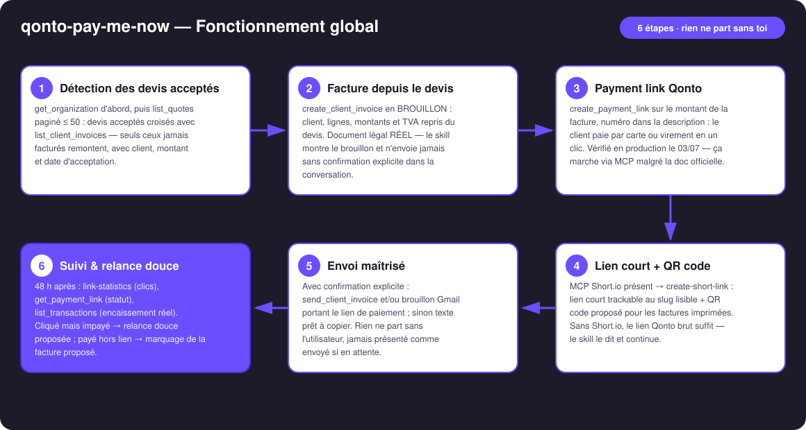
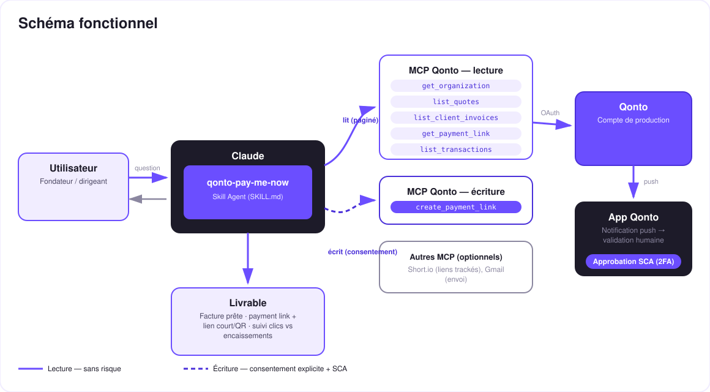

Du devis à l'argent, sans friction — le devis accepté devient facture, lien de paiement et encaissement.
Le trou noir du freelance : le devis est accepté… et puis rien. La facture attend, le paiement attend encore plus — chaque jour entre le « oui » et l'argent, c'est de la trésorerie gagnée mais intouchable. Le skill enchaîne tout le cycle dans une seule conversation :
Devis croisés avec les factures existantes — seuls les acceptés jamais facturés remontent, avec client, montant et date.
Brouillon d'abord, document RÉEL : relecture ligne par ligne, envoi seulement après ta confirmation explicite.
Le client paie par carte ou virement en un clic. Lien court trackable Short.io + QR code pour les factures imprimées.
Cliqué mais impayé après 48 h → relance douce proposée, rédigée — jamais envoyée toute seule.
Le cycle de paiement passe de « quand il y pense » à « il clique, il paie ».
| Prérequis | Détail | Obligatoire |
|---|---|---|
| Compte Qonto production | Le skill s'adapte à toute organisation — get_organization d'abord, zéro donnée en dur | ✅ |
| Pays | Cycle devis → facture → payment link : identique pour tous les pays Qonto (FR, DE, ES, IT, AT, NL, BE, PT). Ton des relances : France au complet ; ailleurs le skill adapte et n'invente jamais de mention légale locale | ℹ️ détecté |
| MCP Qonto connecté | Connecteur officiel (claude.ai / Claude Desktop), login OAuth | ✅ |
| Payment links activés | Activation unique dans l'app Qonto. Si create_payment_link refuse, le skill l'explique et continue avec la facture seule | ⭕ recommandé |
| Devis créés dans Qonto | Le skill part de list_quotes ; sans devis, il sait aussi partir d'une facture impayée existante | ⭕ |
| MCP Short.io / Gmail | Enrichissements optionnels détectés dynamiquement : lien court + stats de clics / envoi. Sans eux : lien Qonto brut + texte à copier | ⭕ optionnel |

create_payment_link directement, sans se fier à la doclist_transactions (montant ± 0,01, contrepartie, référence) et mark_client_invoice_as_paid proposé avec preuvevat_payment_condition: "on_receipts") : accélérer le paiement accélère aussi le cycle de TVA — le skill le signale
Ce skill ne peut pas déplacer ton argent : un payment link est un moyen de recevoir un paiement de ton client — rien à voir avec un virement sortant (impossible via MCP de toute façon : toute demande de virement exige ta SCA dans l'app Qonto). Les trois seules écritures : une facture (brouillon d'abord, envoi après ton OK explicite), un lien de paiement désactivable à tout moment dans l'app, et le marquage « payée » — toujours proposé, jamais automatique.
| Lien cliqué ? | Paiement reçu ? | Action proposée |
|---|---|---|
| ❌ Non | ❌ Non | Vérifier l'envoi ; proposer de renvoyer le lien par un autre canal |
| ✅ Oui | ❌ Non (> 48 h) | Relance douce — « le lien est toujours actif » — rédigée, jamais envoyée seule |
| ✅ Oui | ✅ Oui | Boucle fermée ✅ — confirmation dans le rapport |
| ❌ Non | ✅ Oui | Payé par virement classique hors lien → rapprochement + mark_client_invoice_as_paid proposé |
| Sortie | Format | Quand |
|---|---|---|
| Réponse dans la conversation | Tableaux markdown : pipeline devis → facture → lien, matrice de suivi | Toujours — c'est la base |
| Le payment link (+ lien court) | URL Qonto + URL courte Short.io, prêtes à partager | À chaque cycle |
| QR code | Fichier/artifact image encodant le lien, pour les factures imprimées | Si l'hôte affiche les fichiers ; sinon les liens suffisent |
| Rapport de suivi | Clics vs encaissements + relances proposées | Sur demande / à J+2 |
La démo ≤ 3 min jointe à la PR suit le storyboard : le trou noir → détection & facture → payment link + lien court → le QR scanné au téléphone, la page de paiement Qonto qui s'affiche → suivi & relance. Tournée en live sur un compte de production réel.
| Idée | Effort | Note |
|---|---|---|
| Acompte à la signature : payment link partiel (30 %) dès l'acceptation du devis | Moyen | Le même cycle, encore plus tôt |
| Rappel J+2 dans le calendrier (MCP calendrier détecté dynamiquement) | Faible | Multi-MCP optionnel, dans l'esprit du kickoff |
| Messages client multilingues (langue du client détectée) | Faible | Qonto est paneuropéen |
| Tableau de bord encaissements : taux clic → paiement par client | Moyen | Réutilise link-statistics + list_transactions |
| Mentions légales locales par pays (DE · ES · IT…) | Moyen | v1 = cycle identique partout, v2 = wording local |
delete_client_invoice ensuite